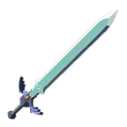
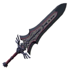

Les Épées dans Zelda Breath Of The Wild sont les armes principales. En effet, sans arme à une ou deux mains, il vous sera difficile de triompher des ennemis les plus coriaces. Vous avez donc bien compris en quoi elles sont nécessaire pour avancer dans votre aventure. Personellement, j'ai réussi à survivre une partie de mon exploration sans armes et effectivement ce fut très complexe. Voici une liste des armes que vous allez couramment pendant votre exploration.
| Nom | Description | Image |
|---|---|---|
| Épée de légende Attaque: 30 Solidité: 40 |
C'est tout simplement l'épée ultime. Débloquez la à la forêt Korogu pour avoir une épée assez puissante mais qui vous réservera des surprises. |  |
| Glaive de Gardien 3.0 Attaque: 40 Solidité: 32 |
Arme à une main tapant assez fort n'empêche. Récupérable assez facilement quand vous avez l'expérience d'affronter les Gardiens. Assez solide, une bonne arme pour attaquer sans relâche et infliger des dégâts par seconde (DPS) conséquents. | |
| Épée Électrique Attaque: 22 Solidité: 36 |
Arme élémentaire à une main électrique, elle électrifie les cibles lorsque vous les attaquez. Au sol, elle produit de l'électricité conductible par d'autres armes ou boucliers en métal ou même tout autre objet en métal. Récupérable à l'amphithéatre de la plaine d'Hyrule. | |
| Épée des Flammes Attaque: 24 Solidité: 36 |
Arme élémentaire à une main de flamme, elle brûle tout ce qu'elle touche, que ce soit les ennemis, les arbres ou même le décor (buissons). Portée, elle permet à Link de se réchauffer notamment dans les lieux froids. Récupérable dans l'amphithéatre de la plaine d'Hyrule en battant le Lynel gardant le lieu. | |
| Épée des Glaces Attaque: 20 Solidité: 36 |
Arme élémentaire à une main de glace, elle gèle tout ce qu'elle touche. Elle refroidit Link dans les endroits chauds. Récupérable à l'amphithéatre de la plaine d'Hyrule. | |
| Épée de Garde Royal Attaque: 48 Solidité: 14 |
On l'appelle l'épée de légende noire, cette épée EXTREMEMENT puissante est pour autant, fragile, elle se casse très rapidement Récupérable au château d'Hyrule en vous baladant gentiment. | |
| Épée Royale Attaque: 36 Solidité: 36 |
Arme classique, produit de bon dégâts, bonne résistance, c'est une arme à garder sur soi en cas d'attaque surprise. Récupérable un peu partout en tuant les créatures hostiles. | |
| Espadon de Garde Royal Attaque: 72 Solidité: 15 |
Tout simplement la version améliorée de l'épée de garde royale, cette espadon est une arme à deux main. Incroyable efficace pour les attaques surprises: elle achève tout d'un seul coup. Peut produire beaucoup de DPS si bien utilisée, elle reste une arme occasionelle. Récupérable au château d'Hyrule si vous saluez les Moblins à gros coups d'épée (les achever si vous n'avez pas compris la métaphore :x ). |  |
| Espadon Royal Attaque: 52 Solidité: 40 |
Version à deux mains de l'épée royale, moins maniable, mais beaucoup plus conséquente niveau dégats. Elle peut vous être utile si vous ennemi ne bouge plus pour l'éliminer rapidement. Récupérable au château gentiment si vous prenez la peine d'explorer. | |
| Longue Épée Archéonique Attaque: 55 Solidité: 50 |
Je n'ai pas eu l'occasion de tester l'arme complètement, à part qu'elle soit super forte contre les gardiens et qu'elle soit une arme à deux mains, pas trop d'infos. | |
| Espadon du Dieu Bestial Attaque: 78 Solidité: 35 |
Surpuissante arme à deux mains, pour la récupérer, il faudra la mériter car il vous faut de triompher d'un lynel blanc pour avoir une chance de l'avoir. | |
| Hache de Gardien 3.0 Attaque: 60 Solidité: 25 |
Hache puissante qui vous aidera beaucoup en tant que dernier recours pour achever un ennemi. Récupérable sur les Gardiens. | |
| Lance de Gardien 3.0 Attaque: 20 Solidité: 35 |
Arme que je vous déconseille mais qui peut s'avérer utile quand vous êtes en manque de vie et sans moyens de soins afin de garder les ennemis à distance. | |
| Lance Archéonique Attaque: 30 Solidité:50 |
Je n'ai jamais pu expérimenter cette arme car elle coûte assez cher en ressource. | |
| Hallebarde de Garde Royal Attaque: 32 Solidité: 15 |
Cette arme à deux mains peut s'avérer utile pour infliger des DPS forts aux ennemis. | |
| Hallebarde Royale Attaque: 26 Solidité: 50 |
Même but que pour l'Hallebarde de Grade Royal, elle peut vous servir pour garder à distance et infliger des DPS bons aux ennemis. |